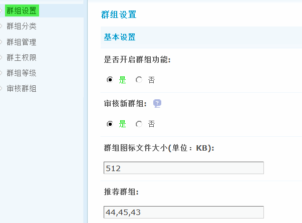
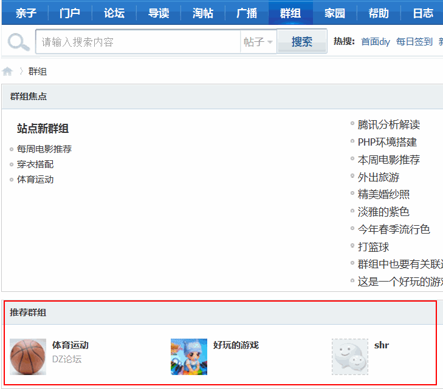

群组设置
群组设置中，可以对站内的群组功能是否开启、新群组是否需要审核，群组图标文件大小、推荐群组以及选择在群组中具有与论坛中相对应的管理权限的管理用户组等。
操作路径：【后台】=>【群组】=>【群组设置】
是否开启群组功能：选择“是”开启群组功能，选择“否”关闭群组功能。
审核新群组：选择“是”创建群组时需要通过管理员审核通过后才可以使用，管理员建立群组时不需要审核。
关于审核新群组的详细介绍请参考：“审核群组”功能说明。
群组图标文件大小(kb)：设置群组图标文件的最大尺寸，0 或留空为不限制。
推荐群组：填写要推荐到群组首页的群组ID，以英文逗号“,”分隔，最多显示8个，如不足会自动补充积分最高的群组。填写后在前台的显示效果如下：
选择管理用户组：选择在群组中具有与论坛中相对应的管理权限的管理用户组。
允许发送广播和动态：开启后默认允许用户发送广播和动态，广播是否发送用户可以在发帖时去掉，隐私版块建议设为否。